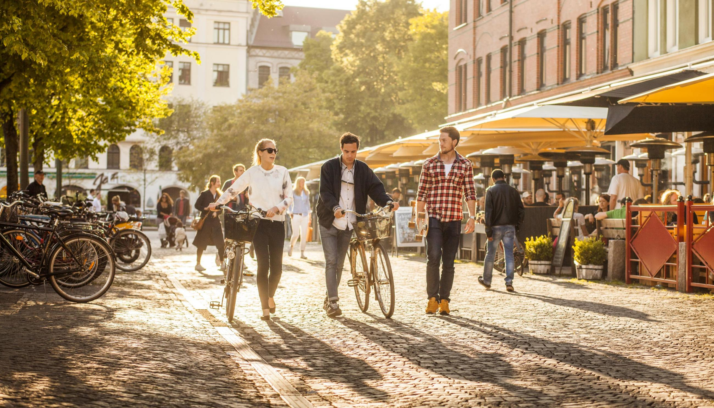

You have decided to take a trip to Sweden's southernmost county. But with so much to see and do, it can be hard to know where to start! Luckily we are here to help you with practical information and a handy tool to help you plan your trip.
If you are flying from another country the closest airport is Copenhagen Kastrup. From there, it is only a 20 train journey across the öresund Bridge to central Malmö. Skåne also has excellent rail links with the rest of mainland Europe.
All of Skåne can be reached within approximately two hours, so it is very easy to get about. You can easily rent a car in any of the main cities such as Malmö, Lund or Helsingborg. However Skåne also has excellent public transport links if you prefer to relax when you travel! You can download the Skånetrafiken app here and use this to buy a ticket that suits your trip.
As it is situated at the very southern tip of Sweden, Skåne has a mild climate similar to the UK and Ireland. Winter temperatures only rarely fall below zero degrees celcius and Summers are usually good with temperatures in the low to mid twenties.
Skåne really has something for everyone - history, architecture and nightlife in cities like Malmö and Lund, beautiful countryside perfect for hiking and camping, and sandy coastlines. Skåne is child friendly with lots of activities for children. And for the foodies out there, Skåne is known for it's excellent food scene and local produce.
The currency is Swedish Kronor. However Sweden has become more or less a cashless society. Most people pay by card and many shops, cafes and restaurants now only accept card or mobile payments.
By answering a few questions about yourself and your interests, we will give you a plan with places to stay, things to see and activities to suit you.